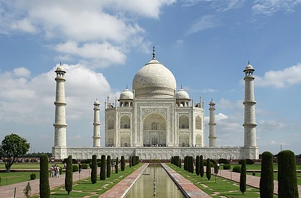

Welcome to My Webpage
Tourism
Time To Go Trip...
Tourism is travel for pleasure, and the commercial activity of providing and supporting such travel. There are many varieties of tourism. Of those types, there are multiple forms of outdoor-oriented tourism.

- Charminar
- Tajmahal 
- GOLDEN TEMPLE
- Adhi Yogi Temple
List Of Tourist Places
The Charminar is a monument located in Hyderabad, Telangana, India. Constructed in 1591, the landmark is a symbol of Hyderabad and officially incorporated in the emblem of Telangana. The Charminar is situated on the east bank of Musi River. To the west lies the Laad Bazaar, and to the southwest the richly ornamented Makkah Masjid. It is listed as an archaeological and architectural treasure by the Archaeological Survey of India.
The Taj Mahal is an ivory-white marble mausoleum on the right bank of the river Yamuna in Agra, Uttar Pradesh, India. It was commissioned in 1631 by the fifth Mughal emperor, Shah Jahan, to house the tomb of his beloved wife, Mumtaz Mahal; it also houses the tomb of Shah Jahan himself.

The Golden Temple, also known as Harmandir Sahib, is a gurdwara located in Amritsar, Punjab, India. It is the pre-eminent spiritual site of Sikhism. The temple is situated on a small island in the center of a pool called the Amrita Saras, connected to land by a marble causeway. The stunning golden architecture and daily Langar attract visitors and devotees.

Over 15,000 years ago, predating all religion, Adiyogi, the first Yogi, transmitted the science of Yoga to his seven disciples, the Saptarishis. He expounded 112 ways through which human beings can transcend their limitations. Adiyogi’s offerings are tools for individual transformation, as individual transformation is the only way to transform the world.